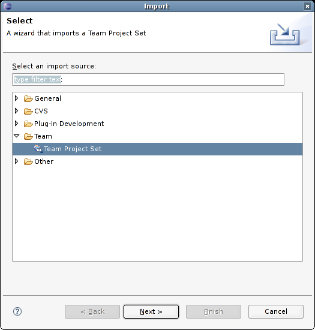

From menu File in Eclipse execute Import. Next, highlight section Team/Team Project Set and press Next.

Enter file name tigase-server.psf in field File and press Finish.
The file is attached to this article.
Because kobit has objections to add Eclipse configuration files to subversion repository you have to do it on your own.
That’s it. Start hacking now!